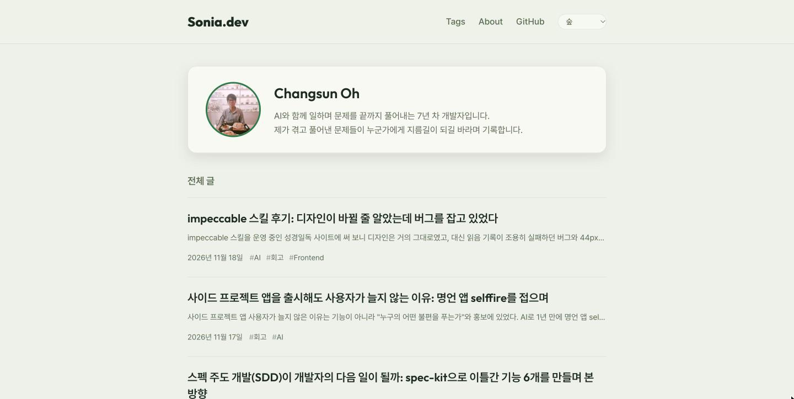
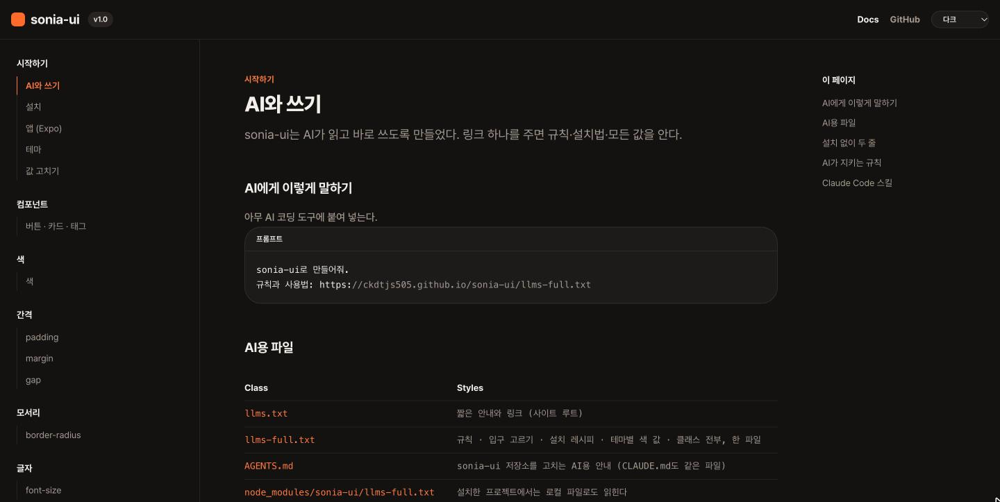

시작하는 네 가지 방법
AI에게 맡기는 게 기본이다. 직접 설치한다면 프로젝트에 맞는 하나만 고른다.
AI에게 맡긴다
Claude Code 등에 아래 프롬프트를 붙여 넣는다. 에이전트가 llms-full.txt를 읽고 이 규칙대로 만든다.
sonia-ui로 만들어줘. 규칙과 사용법: https://ckdtjs505.github.io/sonia-ui/llms-full.txt
에이전트가 지키는 규칙
- 색은 역할 이름으로:
bg-primary,var(--color-surface) - 간격·모서리·글자는 단계 이름으로:
p-lg,rounded-md,text-title - 버튼·카드·태그·입력은
sn-btn·sn-card·sn-tag·sn-input - hex·px는 쓰지 않는다. 테마는
<html data-theme>하나로 바꾸고, 없으면 기기 설정을 따른다.
직접 설치한다면
설치 없이 두 줄
정적 페이지 <head>에 넣으면 색·sn-*·테마 선택까지 된다.
<link rel="stylesheet" href="https://cdn.jsdelivr.net/gh/ckdtjs505/sonia-ui@1/src/css/base.css"> <script src="https://cdn.jsdelivr.net/gh/ckdtjs505/sonia-ui@1/src/browser/theme.js"></script>
npm + Tailwind v4
설치 후 CSS에 두 줄만 넣는다.
npm i github:ckdtjs505/sonia-ui /* app.css */ @import "tailwindcss"; @import "sonia-ui/tailwind.css";
Expo 앱
같은 토큰 이름을 Restyle Box·Text로 쓴다.
npm i github:ckdtjs505/sonia-ui \
@shopify/restyle \
react-native-safe-area-context
import {
ThemeProvider,
getTheme,
Box,
Text,
} from "sonia-ui/native";
<ThemeProvider theme={getTheme("dark")}>
<Box padding="lg">
<Text variant="title">안녕</Text>
</Box>
</ThemeProvider>
버튼 · 카드 · 태그 · 입력
클래스 두 개를 조합한다. Tailwind와 순수 CSS에서 이름이 같다. 위 테마를 바꾸면 여기도 함께 바뀐다.
디자인
메모
<button class="sn-btn sn-btn-primary">저장</button>
<button class="sn-btn sn-btn-soft">임시 저장</button>
<button class="sn-btn sn-btn-outline">취소</button>
<button class="sn-btn sn-btn-ghost">더 보기</button>
<span class="sn-tag">디자인</span>
<span class="sn-tag sn-tag-muted">메모</span>
<div class="sn-card flex flex-col gap-s">
<label for="todo" class="text-label">할 일</label>
<input
id="todo"
class="sn-input"
placeholder="오늘 할 일을 적는다"
/>
</div>
이미 이 값으로 돌아가는 곳

Sonia.dev 블로그 ckdtjs505.github.io ·themes.css
- self-fire
- Expo ·
native - planner
base.css인라인- ai-tutor
- Next ·
base.css+ CDNtheme.js - csfreecaTV
- CDN
- Momentum
- CDN
- 이 문서 사이트
tailwind.css
이름만 알면 된다
색·간격·모서리·글자 모두 정해진 이름으로 쓴다. 전체 표는 각 문서에 있다.
bg-primary
주요 강조
bg-primary-soft
보조·태그 배경
bg-background
화면 바탕
bg-surface-muted
들어간 면
모서리
6단계 전체 보기rounded-sm
버튼·입력
rounded-md
카드
rounded-pill
태그·칩
글자
11단계 전체 보기text-title화면 제목text-body본문 글자text-caption설명과 보조 글자